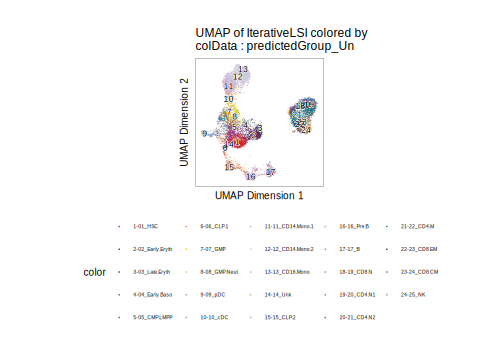

10.1 Cross-platform linkage of scATAC-seq cells with scRNA-seq cells
In order to integrate our tutorial scATAC-seq data with matched scRNA-seq data, we will use scRNA-seq data derived from the same hematopoietic cell types from Granja* et al (2019).
We have stored this scRNA-seq data as a 111 MB RangedSummarizedExperiment object. However, ArchR also accepts unmodified Seurat objects as input to the integration workflow. However, Seurat SCTransform-normalized data is not suitable for this integration workflow. Downloading and examining this object, we see that it has a gene expression counts matrix and associated metadata.
if(!file.exists("scRNA-Hematopoiesis-Granja-2019.rds")){
download.file(
url = "https://jeffgranja.s3.amazonaws.com/ArchR/TestData/scRNA-Hematopoiesis-Granja-2019.rds",
destfile = "scRNA-Hematopoiesis-Granja-2019.rds"
)
}
seRNA <- readRDS("scRNA-Hematopoiesis-Granja-2019.rds")
seRNA
## class: RangedSummarizedExperiment
## dim: 20287 35582
## metadata(0):
## assays(1): counts
## rownames(20287): FAM138A OR4F5 ... S100B PRMT2
## rowData names(3): gene_name gene_id exonLength
## colnames(35582): CD34_32_R5:AAACCTGAGTATCGAA-1
## CD34_32_R5:AAACCTGAGTCGTTTG-1 ...
## BMMC_10x_GREENLEAF_REP2:TTTGTTGCATGTGTCA-1
## BMMC_10x_GREENLEAF_REP2:TTTGTTGCATTGAAAG-1
## colData names(10): Group nUMI_pre ... BioClassification BarcodeThe metadata contains a column called BioClassification which contains the cell type classifications for each cell in the scRNA-seq dataset.
colnames(colData(seRNA))
## [1] "Group" "nUMI_pre" "nUMI"
## [4] "nGene" "initialClusters" "UMAP1"
## [7] "UMAP2" "Clusters" "BioClassification"
## [10] "Barcode"Using table() we can see how many cells are in each of the scRNA-seq cell type classifications.
table(colData(seRNA)$BioClassification)
##
## 01_HSC 02_Early.Eryth 03_Late.Eryth 04_Early.Baso 05_CMP.LMPP
## 1425 1653 446 111 2260
## 06_CLP.1 07_GMP 08_GMP.Neut 09_pDC 10_cDC
## 903 2097 1050 544 325
## 11_CD14.Mono.1 12_CD14.Mono.2 13_CD16.Mono 14_Unk 15_CLP.2
## 1800 4222 292 520 377
## 16_Pre.B 17_B 18_Plasma 19_CD8.N 20_CD4.N1
## 710 1711 62 1521 2470
## 21_CD4.N2 22_CD4.M 23_CD8.EM 24_CD8.CM 25_NK
## 2364 3539 796 2080 2143
## 26_Unk
## 161There are two types of integration approaches that we can perform. Unconstrained integration is a completely agnostic approach that would take all of the cells in your scATAC-seq experiment and attempt to align them to any of the cells in the scRNA-seq experiment. While this is a feasible preliminary solution, we can improve the quality of our cross-platform alignment by constraining the integration process. To perform a constrained integration we use prior knowledge of the cell types to limit the search space of the alignment. For example, if we knew that Clusters A, B, and C in the scATAC-seq data corresponded to 3 different T cell clusters, and we knew that Clusters X and Y in the scRNA-seq data corresponded to 2 different T cell clusters, we could tell ArchR to specifically try to align cells from scATAC-seq Clusters A, B, and C to cell from scRNA-seq clusters X and Y. We illustrate these two approaches below, first performing an unconstrained integration to acheive preliminary cluster identities and then using this prior knowledge to perform a more refined constrained integration. However, please note that your own application must guide which type of integration you perform. Constrained integration may not be suited for all applications so the below sections are merely a guide for how to accomplish this and should not be viewed as a “tutorial” on how to integrate your own data.
10.1.1 Unconstrained Integration
To integrate scATAC-seq with scRNA-seq, we use the addGeneIntegrationMatrix() function. As mentioned above, this function accepts either a Seurat object or a RangedSummarizedExperiment object via the seRNA parameter. The first round of integration we perform will be a preliminary unconstrained integration and we will not store this in the Arrow files (addToArrow = FALSE). We provide a name for the integration matrix that will be stored in the ArchRProject via the matrixName parameter. The other key parameters for this function provide column names in cellColData where certain information will be stored: nameCell will store the cell ID from the matched scRNA-seq cell, nameGroup will store the group ID from the scRNA-seq cell, and nameScore will store the cross-platform integration score.
projHeme2 <- addGeneIntegrationMatrix(
ArchRProj = projHeme2,
useMatrix = "GeneScoreMatrix",
matrixName = "GeneIntegrationMatrix",
reducedDims = "IterativeLSI",
seRNA = seRNA,
addToArrow = FALSE,
groupRNA = "BioClassification",
nameCell = "predictedCell_Un",
nameGroup = "predictedGroup_Un",
nameScore = "predictedScore_Un"
)
## ArchR logging to : ArchRLogs/ArchR-addGeneIntegrationMatrix-1a11a7b24cd-Date-2025-01-23_Time-20-20-12.9844.log
## If there is an issue, please report to github with logFile!
## 2025-01-23 20:20:13.163894 : Running Seurat's Integration Stuart* et al 2019, 0.003 mins elapsed.
## 2025-01-23 20:20:13.759011 : Checking ATAC Input, 0.013 mins elapsed.
## 2025-01-23 20:20:14.299231 : Checking RNA Input, 0.022 mins elapsed.
## 2025-01-23 20:20:27.755453 : Found 18601 overlapping gene names from gene scores and rna matrix!, 0.246 mins elapsed.
## 2025-01-23 20:20:27.76262 : Creating Integration Blocks, 0.246 mins elapsed.
## 2025-01-23 20:20:27.955851 : Prepping Interation Data, 0.25 mins elapsed.
## subThreading Disabled since ArchRLocking is TRUE see `addArchRLocking`
## 2025-01-23 20:20:28.685436 : Computing Integration in 1 Integration Blocks!, 0 mins elapsed.
## 2025-01-23 20:20:28.72401 : Block (1 of 1) : Computing Integration, 0.001 mins elapsed.
## 2025-01-23 20:20:30.100461 : Block (1 of 1) : Identifying Variable Genes, 0.024 mins elapsed.
## 2025-01-23 20:20:34.107292 : Block (1 of 1) : Getting GeneScoreMatrix, 0.09 mins elapsed.
## 2025-01-23 20:20:43.429565 : Block (1 of 1) : Imputing GeneScoreMatrix, 0.246 mins elapsed.
## Getting ImputeWeights
## 2025-01-23 20:21:14.660182 : Block (1 of 1) : Seurat FindTransferAnchors, 0.766 mins elapsed.
## 2025-01-23 20:22:54.939764 : Block (1 of 1) : Seurat TransferData Cell Group Labels, 2.438 mins elapsed.
## 2025-01-23 20:23:16.331755 : Block (1 of 1) : Seurat TransferData Cell Names Labels, 2.794 mins elapsed.
## 2025-01-23 20:23:51.071236 : Block (1 of 1) : Saving TransferAnchors Joint CCA, 3.373 mins elapsed.
## 2025-01-23 20:23:53.643257 : Block (1 of 1) : Completed Integration, 3.416 mins elapsed.
## 2025-01-23 20:23:55.801247 : Block (1 of 1) : Plotting Joint UMAP, 3.452 mins elapsed.
## Length of unique values greater than palette, interpolating..
## 2025-01-23 20:24:19.785256 : Completed Integration with RNA Matrix, 3.852 mins elapsed.
## ArchR logging successful to : ArchRLogs/ArchR-addGeneIntegrationMatrix-1a11a7b24cd-Date-2025-01-23_Time-20-20-12.9844.logThis unconstrained integration can be used as shown below to perform a more refined constrained integration.
You may want to assess the “quality” of the integration between your scATAC-seq and scRNA-seq data. ArchR provides two general ways to do this. The first is the option to ouput a UMAP plot of the joint CCA subspace. This is enabled through the plotUMAP and UMAPParams parameters to addGeneIntegrationMatrix(). If plotUMAP = TRUE, then a UMAP plot is saved for each block of the integration in a subfolder (based on matrixName) of the “RNAIntegration” folder. These plots can be difficult to interpret, especially with the intercellular heterogeneity isn’t very strong. As an alternative, ArchR also stores the NAME.score value from Seurat::TransferData() in a column of cellColData indicated by what you pass to the nameScore parameter.
10.1.2 Constrained Integration
Now that we have our preliminary unconstrained integration, we will identify general cell types to profide a framework to further refine the integration results.
Given that this tutorial data is from hematopoietic cells, we would ideally constrain the integration to associate similar cell types togther. First, we will identify which cell types from the scRNA-seq data are most abundant in each of our scATAC-seq clusters. The goal of this is to identify the cells in both the scATAC-seq and scRNA-seq data that correspond to T cells and NK cells using the unconstrained integration so that we can perform a constrained integration using this information. To do this, we will create a confusionMatrix that looks at the intersection of Clusters and predictedGroup_Un which contains the cell types as identified by scRNA-seq.
cM <- as.matrix(confusionMatrix(projHeme2$Clusters, projHeme2$predictedGroup_Un))
preClust <- colnames(cM)[apply(cM, 1 , which.max)]
cbind(preClust, rownames(cM)) #Assignments
## preClust
## [1,] "17_B" "C9"
## [2,] "20_CD4.N1" "C11"
## [3,] "16_Pre.B" "C4"
## [4,] "08_GMP.Neut" "C7"
## [5,] "12_CD14.Mono.2" "C1"
## [6,] "02_Early.Eryth" "C6"
## [7,] "01_HSC" "C8"
## [8,] "22_CD4.M" "C12"
## [9,] "09_pDC" "C3"
## [10,] "25_NK" "C10"
## [11,] "12_CD14.Mono.2" "C2"
## [12,] "15_CLP.2" "C5"The above list shows which scRNA-seq cell type is most abundant in each of the 12 scATAC-seq clusters.
First, lets look at the cell type labels from our scRNA-seq data that were used in our unconstrained integration:
unique(unique(projHeme2$predictedGroup_Un))
## [1] "17_B" "22_CD4.M" "16_Pre.B" "06_CLP.1"
## [5] "08_GMP.Neut" "24_CD8.CM" "11_CD14.Mono.1" "12_CD14.Mono.2"
## [9] "07_GMP" "02_Early.Eryth" "05_CMP.LMPP" "03_Late.Eryth"
## [13] "04_Early.Baso" "09_pDC" "20_CD4.N1" "10_cDC"
## [17] "23_CD8.EM" "19_CD8.N" "25_NK" "15_CLP.2"
## [21] "21_CD4.N2" "01_HSC" "14_Unk" "13_CD16.Mono"From the above list, we can see that the clusters in the scRNA-seq data that correspond to T cells and NK cells are Clusters 19-25. We will create a string-based representation of these clusters to use in the downstream constrained integration.
We can then take all of the other clusters and create a string-based representation of all “Non-T cell, Non-NK cell” clusters (i.e. Cluster 1 - 18).
cNonTNK <- paste0(c(paste0("0", 1:9), 10:13, 15:18), collapse="|")
cNonTNK
## [1] "01|02|03|04|05|06|07|08|09|10|11|12|13|15|16|17|18"These string-based representations are pattern matching strings that we will use with grep to extract the scATAC-seq clusters that correspond to these scRNA-seq cell types. The | in the string acts as an or statement so we end up searching for any row in the preClust column of our confusion matrix that matches one of the scRNA-seq cluster numbers provided in the pattern match string.
For T cells and NK cells, this identifies scATAC-seq clusters C7, C8, and C9:
For Non-T cells and Non-NK cells, this identifies the remaining scATAC-seq clusters:
clustNonTNK <- rownames(cM)[grep(cNonTNK, preClust)]
clustNonTNK
## [1] "C9" "C4" "C7" "C1" "C6" "C8" "C3" "C2" "C5"We then perform a similar opperation to identify the scRNA-seq cells that correspond to these same cell types. First, we identify the T cell and NK cells in the scRNA-seq data
rnaTNK <- colnames(seRNA)[grep(cTNK, colData(seRNA)$BioClassification)]
head(rnaTNK)
## [1] "PBMC_10x_GREENLEAF_REP1:AAACCCAGTCGTCATA-1"
## [2] "PBMC_10x_GREENLEAF_REP1:AAACCCATCCGATGTA-1"
## [3] "PBMC_10x_GREENLEAF_REP1:AAACCCATCTCAACGA-1"
## [4] "PBMC_10x_GREENLEAF_REP1:AAACCCATCTCTCGAC-1"
## [5] "PBMC_10x_GREENLEAF_REP1:AAACGAACAATCGTCA-1"
## [6] "PBMC_10x_GREENLEAF_REP1:AAACGAACACGATTCA-1"Then, we identify the Non-T cell Non-NK cell cells in the scRNA-seq data.
rnaNonTNK <- colnames(seRNA)[grep(cNonTNK, colData(seRNA)$BioClassification)]
head(rnaNonTNK)
## [1] "CD34_32_R5:AAACCTGAGTATCGAA-1" "CD34_32_R5:AAACCTGAGTCGTTTG-1"
## [3] "CD34_32_R5:AAACCTGGTTCCACAA-1" "CD34_32_R5:AAACGGGAGCTTCGCG-1"
## [5] "CD34_32_R5:AAACGGGAGGGAGTAA-1" "CD34_32_R5:AAACGGGAGTTACGGG-1"To prepare for this constrained integration, we create a nested list. This is a SimpleList of multiple SimpleList objects, one for each group that we would like to constrain. In this example, we have two groups: one group called TNK that identifies the T cells and NK cells across the two platforms, and a second group called NonTNK that identifies the Non-T cell Non-NK cell cells across the two platforms. Each of these SimpleList objects has two vectors of cell IDs, one called ATAC and one called RNA as shown below:
groupList <- SimpleList(
TNK = SimpleList(
ATAC = projHeme2$cellNames[projHeme2$Clusters %in% clustTNK],
RNA = rnaTNK
),
NonTNK = SimpleList(
ATAC = projHeme2$cellNames[projHeme2$Clusters %in% clustNonTNK],
RNA = rnaNonTNK
)
)We pass this list to the groupList parameter of the addGeneIntegrationMatrix() function to constrain our integration. Note that, in this case, we are still not adding these results to the Arrow files (addToArrow = FALSE). We recommend checking the results of the integration thoroughly against your expectations prior to saving the results in the Arrow files. We illustrate this process in the next section of the book.
#~5 minutes
projHeme2 <- addGeneIntegrationMatrix(
ArchRProj = projHeme2,
useMatrix = "GeneScoreMatrix",
matrixName = "GeneIntegrationMatrix",
reducedDims = "IterativeLSI",
seRNA = seRNA,
addToArrow = FALSE,
groupList = groupList,
groupRNA = "BioClassification",
nameCell = "predictedCell_Co",
nameGroup = "predictedGroup_Co",
nameScore = "predictedScore_Co"
)
## ArchR logging to : ArchRLogs/ArchR-addGeneIntegrationMatrix-1a17935ef4a-Date-2025-01-23_Time-20-24-20.231422.log
## If there is an issue, please report to github with logFile!
## 2025-01-23 20:24:20.412121 : Running Seurat's Integration Stuart* et al 2019, 0.003 mins elapsed.
## 2025-01-23 20:24:20.949329 : Checking ATAC Input, 0.012 mins elapsed.
## 2025-01-23 20:24:21.550167 : Checking RNA Input, 0.022 mins elapsed.
## 2025-01-23 20:24:29.562689 : Found 18601 overlapping gene names from gene scores and rna matrix!, 0.156 mins elapsed.
## 2025-01-23 20:24:29.56959 : Creating Integration Blocks, 0.156 mins elapsed.
## 2025-01-23 20:24:29.703166 : Prepping Interation Data, 0.158 mins elapsed.
## subThreading Disabled since ArchRLocking is TRUE see `addArchRLocking`
## 2025-01-23 20:24:30.483271 : Computing Integration in 2 Integration Blocks!, 0 mins elapsed.
## 2025-01-23 20:24:30.489394 : Block (1 of 2) : Computing Integration, 0 mins elapsed.
## 2025-01-23 20:24:32.047863 : Block (1 of 2) : Identifying Variable Genes, 0.026 mins elapsed.
## 2025-01-23 20:24:33.437231 : Block (1 of 2) : Getting GeneScoreMatrix, 0.049 mins elapsed.
## 2025-01-23 20:24:41.794688 : Block (1 of 2) : Imputing GeneScoreMatrix, 0.189 mins elapsed.
## Getting ImputeWeights
## 2025-01-23 20:24:48.033978 : Block (1 of 2) : Seurat FindTransferAnchors, 0.293 mins elapsed.
## 2025-01-23 20:26:16.492843 : Block (1 of 2) : Seurat TransferData Cell Group Labels, 1.767 mins elapsed.
## 2025-01-23 20:26:35.146521 : Block (1 of 2) : Seurat TransferData Cell Names Labels, 2.078 mins elapsed.
## 2025-01-23 20:27:00.798186 : Block (1 of 2) : Saving TransferAnchors Joint CCA, 2.505 mins elapsed.
## 2025-01-23 20:27:03.144284 : Block (1 of 2) : Completed Integration, 2.544 mins elapsed.
## 2025-01-23 20:27:05.178293 : Block (2 of 2) : Computing Integration, 2.578 mins elapsed.
## 2025-01-23 20:27:06.914584 : Block (2 of 2) : Identifying Variable Genes, 2.607 mins elapsed.
## 2025-01-23 20:27:08.455123 : Block (2 of 2) : Getting GeneScoreMatrix, 2.633 mins elapsed.
## 2025-01-23 20:27:17.502101 : Block (2 of 2) : Imputing GeneScoreMatrix, 2.784 mins elapsed.
## Getting ImputeWeights
## 2025-01-23 20:27:39.386951 : Block (2 of 2) : Seurat FindTransferAnchors, 3.148 mins elapsed.
## 2025-01-23 20:29:14.002704 : Block (2 of 2) : Seurat TransferData Cell Group Labels, 4.725 mins elapsed.
## 2025-01-23 20:29:35.106172 : Block (2 of 2) : Seurat TransferData Cell Names Labels, 5.077 mins elapsed.
## 2025-01-23 20:30:05.494531 : Block (2 of 2) : Saving TransferAnchors Joint CCA, 5.584 mins elapsed.
## 2025-01-23 20:30:07.963272 : Block (2 of 2) : Completed Integration, 5.625 mins elapsed.
## 2025-01-23 20:30:10.018843 : Block (1 of 2) : Plotting Joint UMAP, 5.659 mins elapsed.
## 2025-01-23 20:30:26.290658 : Block (2 of 2) : Plotting Joint UMAP, 5.93 mins elapsed.
## 2025-01-23 20:30:49.725359 : Completed Integration with RNA Matrix, 6.321 mins elapsed.
## ArchR logging successful to : ArchRLogs/ArchR-addGeneIntegrationMatrix-1a17935ef4a-Date-2025-01-23_Time-20-24-20.231422.log10.1.3 Comparing Unconstrained and Constrained Integrations
To compare our unconstrained and constrained integrations, we will color the cells in our scATAC-seq data based on the scRNA-seq cell type identified through integration. To do this, we will create a color palette using the built-in ArchR function paletteDiscrete().
pal <- paletteDiscrete(values = colData(seRNA)$BioClassification)
## Length of unique values greater than palette, interpolating..In ArchR, a palette is essentially a named vector where the values are hex codes corresponding to the color to be associated with the names.
pal
## 01_HSC 02_Early.Eryth 03_Late.Eryth 04_Early.Baso 05_CMP.LMPP
## "#D51F26" "#502A59" "#235D55" "#3D6E57" "#8D2B8B"
## 06_CLP.1 07_GMP 08_GMP.Neut 09_pDC 10_cDC
## "#DE6C3E" "#F9B712" "#D8CE42" "#8E9ACD" "#B774B1"
## 11_CD14.Mono.1 12_CD14.Mono.2 13_CD16.Mono 14_Unk 15_CLP.2
## "#D69FC8" "#C7C8DE" "#8FD3D4" "#89C86E" "#CC9672"
## 16_Pre.B 17_B 18_Plasma 19_CD8.N 20_CD4.N1
## "#CF7E96" "#A27AA4" "#CD4F32" "#6B977E" "#518AA3"
## 21_CD4.N2 22_CD4.M 23_CD8.EM 24_CD8.CM 25_NK
## "#5A5297" "#0F707D" "#5E2E32" "#A95A3C" "#B28D5C"
## 26_Unk
## "#3D3D3D"We can now visualize the integration by overlaying the scRNA-seq cell types on our scATAC-seq data based on the unconstrained integration.
p1 <- plotEmbedding(
projHeme2,
colorBy = "cellColData",
name = "predictedGroup_Un",
pal = pal
)
## ArchR logging to : ArchRLogs/ArchR-plotEmbedding-1a14b444c24-Date-2025-01-23_Time-20-30-49.875203.log
## If there is an issue, please report to github with logFile!
## Getting UMAP Embedding
## ColorBy = cellColData
## Plotting Embedding
## 1
## ArchR logging successful to : ArchRLogs/ArchR-plotEmbedding-1a14b444c24-Date-2025-01-23_Time-20-30-49.875203.log
Similarly, we can visualize the integration by overlaying the scRNA-seq cell types on our scATAC-seq data based on the constrained integration.
p2 <- plotEmbedding(
projHeme2,
colorBy = "cellColData",
name = "predictedGroup_Co",
pal = pal
)
## ArchR logging to : ArchRLogs/ArchR-plotEmbedding-1a16d5099e8-Date-2025-01-23_Time-20-30-52.194744.log
## If there is an issue, please report to github with logFile!
## Getting UMAP Embedding
## ColorBy = cellColData
## Plotting Embedding
## 1
## ArchR logging successful to : ArchRLogs/ArchR-plotEmbedding-1a16d5099e8-Date-2025-01-23_Time-20-30-52.194744.logThe differences between these the unconstrained and constrained integration is very subtle in this example, largely because the cell types of interest are already very distinct. However, you should notice differences, especially in the T cell clusters (Clusters 17-22).
To save an editable vectorized version of this plot, we use the plotPDF() function.
plotPDF(p1,p2, name = "Plot-UMAP-RNA-Integration.pdf", ArchRProj = projHeme2, addDOC = FALSE, width = 5, height = 5)
## Plotting Ggplot!
## Plotting Ggplot!We can now save our projHeme2 using the saveArchRProject() function. Here, we set load = TRUE to make sure that the projHeme2 object tracks with the project that we just saved.
projHeme2 <- saveArchRProject(ArchRProj = projHeme2, outputDirectory = "Save-ProjHeme2", load = TRUE)
## Copying ArchRProject to new outputDirectory : /workspace/ArchR/ArchR_Website_Testing/bookdown/Save-ProjHeme2
## Copying Arrow Files...
## Copying Arrow Files (1 of 3)
## Copying Arrow Files (2 of 3)
## Copying Arrow Files (3 of 3)
## Getting ImputeWeights
## Dropping ImputeWeights...
## Copying Other Files...
## Copying Other Files (1 of 6): Embeddings
## Copying Other Files (2 of 6): IterativeLSI
## Copying Other Files (3 of 6): IterativeLSI2
## Copying Other Files (4 of 6): IterativeLSI3
## Copying Other Files (5 of 6): Plots
## Copying Other Files (6 of 6): RNAIntegration
## Saving ArchRProject...
## Loading ArchRProject...
## Successfully loaded ArchRProject!
##
## / |
## / \
## . / |.
## \\\ / |.
## \\\ / `|.
## \\\ / |.
## \ / |\
## \\#####\ / ||
## ==###########> / ||
## \\##==......\ / ||
## ______ = =|__ /__ || \\\
## ,--' ,----`-,__ ___/' --,-`-===================##========>
## \ ' ##_______ _____ ,--,__,=##,__ ///
## , __== ___,-,__,--'#' ===' `-' | ##,-/
## -,____,---' \\####\\________________,--\\_##,/
## ___ .______ ______ __ __ .______
## / \ | _ \ / || | | | | _ \
## / ^ \ | |_) | | ,----'| |__| | | |_) |
## / /_\ \ | / | | | __ | | /
## / _____ \ | |\ \\___ | `----.| | | | | |\ \\___.
## /__/ \__\ | _| `._____| \______||__| |__| | _| `._____|
##